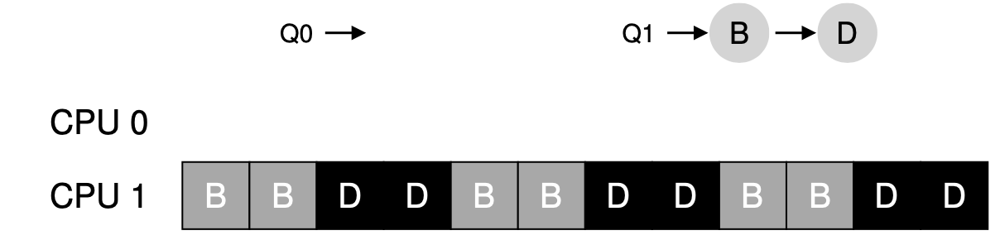

Chapter 10 Multiprocessor Scheduling(Advanced)
并发和并行的区别在于：并发可以允许任务同时存在，并行允许任务同时执行，如果有多个CPU，并发的任务也可以并行，所以两者并不完全对立。
10.1 Background: Multiprocessor Architecture
为了同步两个CPU同时从main memory改变数据产生冲突的问题，使用了叫bus snooping的技术，每次CPU检测到连接CPU和主内存的bus有更新数据的时候，要么invalidate它的复制，要么更新它。
10.2 Synchronization
靠加锁来实现互斥，但是会影响性能，特别是在CPU多的时候。
10.3 One Final Issue：Cache Affinity
最好是同一个process能每次都在同样的CPU上运行，这样会更快，因为直接CPU上已经存好了各种状态。
10.4 Single-Queue Scheduling
最简单的就是single-queue multiprocessor scheduling（SQMS），但是有两个问题：
- scalability：如果CPU比较多，同步的overhead过高
- cache affinity：任务很可能不能每次在同一个CPU上运行，或者需要牺牲掉一些任务的cache affinity来平衡其他的任务，同时这很难实现。
10.5 Multi-Queue Scheduling
相较于SQMS的另一种方法就是multi-queue multiprocessor scheduling（MQMS），比如每个CPU对应一个queue。
这样做的好处是避免了不同CPU的同步和信息共享的问题。但是多个队列最大的问题就是load balance（如下图）：

可以看到，Queue0的任务已经做完了，整个处于空闲的状态，这是非常不合理的。
解决方法是让空闲的CPU是不是去看其他的queue忙不忙，如果特别忙就把他上面的任务“偷过来”，但是要控制好度，太频繁的话overhead过高，太不频繁的话容易导致queue与queue之间的imbalance。
10.6 Linux Multiprocessor Scheduler
Linux上主要有三种multiprocessor scheduler，O(1),CFS和BFS。
O(1)和CFS用多个队列而BFS用一个队列。O(1)用优先级来排序，CFS和BFS是根据占用的比例事先确定好的。需要更深入的了解可以看一下Meehan的论文。